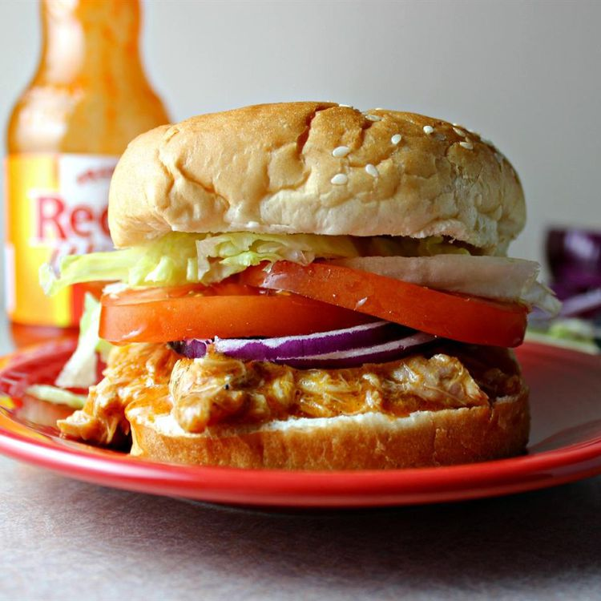

Chicken Sandwiches

Descriptions
This Chicken Sandwiches is great for hearty sandwiches that will please those who love chicken wings.
This recipe is perfect for those days spent watching football.
I like to top these with blue cheese or ranch dressing.
Ingredients
- 4 skinless, boneless chicken breast halves
- 1 (17.5 fluid ounce) bottle Buffalo wing sauce, divided
- 1/2 (1 ounce) package dry ranch salad dressing mix
- 2 tablespoons butter
- 6 hoagie rolls, split lengthwise
Steps
- Place chicken breasts into the slow cooker; pour in 3/4
- Cover and cook on Low for 6 to 7 hours
- Shred chicken in the cooker with two forks
- Pile shredded chicken and sauce onto hoagie rolls.